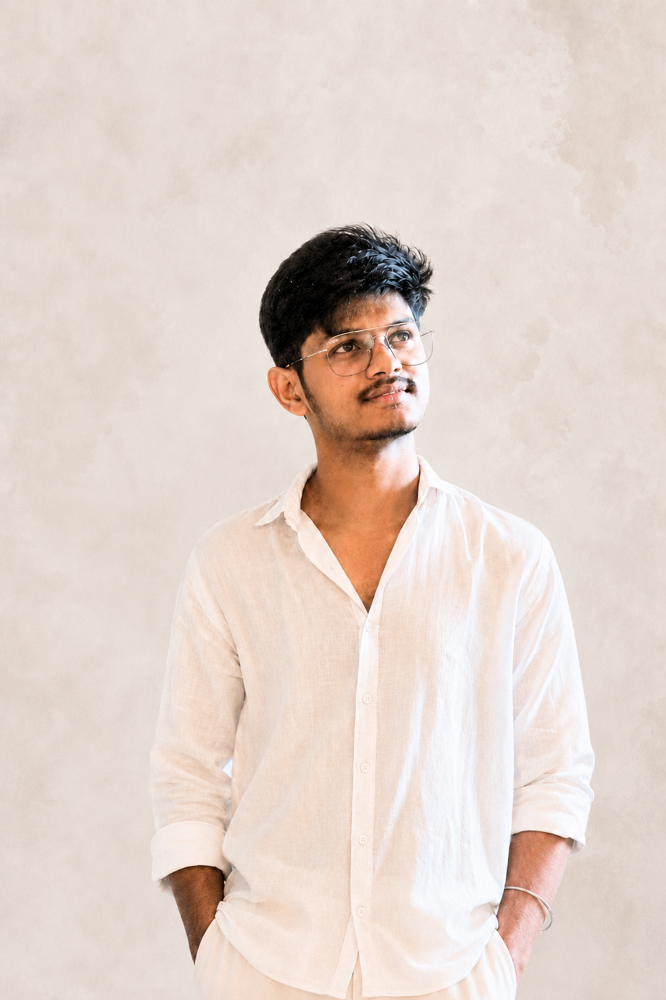

OPEN TO OPPORTUNITIES
Hello, I'm
Sashi
Vardhan.
Full Stack Developer / IT Student
I’m passionate about building useful digital experiences and exploring the possibilities of software development, Artificial Intelligence, and thoughtful UI/UX design.
PROFILE / 2026

Vanapalli Sashi Vardhan
Full Stack Developer
01 — 09
Full Stack Developer
Build. Learn. Improve.
AI & Full Stack
01 / ABOUT ME
Curious by nature.
Driven to build.
A third-year Information Technology student who enjoys turning ideas into practical software and creative digital experiences.
I am a B.Tech Information Technology student at Gayatri Vidya Parishad College of Engineering, Visakhapatnam. I am passionate about technology, software development, Artificial Intelligence, and UI/UX design.
My current focus is on Python, Data Structures and Algorithms, problem-solving through LeetCode, and Full Stack Development. I enjoy learning new technologies, participating in technical events, organizing college activities, and creating designs.
I value self-motivation, discipline, confidence, teamwork, communication, and a positive attitude. I am continuously improving my coding, English communication, public speaking, and time-management skills.
EDUCATIONB.Tech — Information Technology
COLLEGEGayatri Vidya Parishad College of Engineering
LOCATIONVisakhapatnam, Andhra Pradesh, India
02 / TOOLKIT
Skills & technologies.
Web Development
Database & AI
Core & Tools
ALSO BRINGING
Problem-solving · Communication · Teamwork · Time management · Coordination · Creative design
03 / SELECTED WORK
Projects built with purpose.
A selection of projects exploring productivity, learning platforms, and intelligent automation.
✦
AI PRODUCTIVITY WORKSPACEAI-Powered Productivity Workspace
A full-stack workspace designed to improve personal productivity with task management, meeting scheduling, reminders, and AI-powered voice commands. OpenRouter AI processes intelligent commands to make routine activities easier.
{ }
CODESTRUCTCodeStruct — DSA Learning Platform
A comprehensive DSA learning platform featuring coding performance tracking, algorithmic pattern roadmaps, and in-depth concept articles to support problem-solving skills.
↗
DATA CLEANING & TRANSMISSIONData Cleaning & Transmission Agent
A Python-based agent designed to automate data cleaning and streamline data transmission, with the goal of improving data quality and reliability.
04 / EXPERIENCE
Learning through experience.
CIS-GVPCE Internship
Working on an AI-Powered Productivity Workspace as a full-stack development project, gaining practical exposure to application development.
EduSkills Internship Programs
Completed virtual internship learning experiences across Android Development, Generative AI, Prompt Engineering, and UI/UX Development.
AlgoRhythm Club — Volunteer
Contributing to technical event organization and promotion, poster design, certificate preparation, and creative activities for the IT department's technical club.
05 / CERTIFICATIONS
Always learning.
Always exploring.
EDUSKILLS
Android Developer Virtual Internship
Android Development
EDUSKILLS
Generative AI Virtual Internship
Generative AI
EDUSKILLS
Prompt Engineering
AI Prompting Techniques
EDUSKILLS
UI/UX Developer Internship
UI/UX Development
COLLEGE WORKSHOP
UI/UX Design Workshop
Offline workshop · December 2025
06 / ACHIEVEMENTS & ACTIVITIES
Progress beyond the classroom.
Academic Achievement
Maintained a strong academic record, with an 8.88 CGPA stated in the resume, and received the Vidyadhan Scholarship.
Smart India Hackathon
Participated in Smart India Hackathon in 2025 and 2026, gaining collaborative problem-solving experience.
CIS-GVPCE Internship Selection
Selected for the CIS-GVPCE Internship to gain practical full-stack development experience.
AlgoRhythm Club Contributions
Supported technical events including UI2API Challenge and MOCK2HIRE through event promotion, poster design, and certificate preparation.
Coding Practice
Practiced problem-solving with 50+ LeetCode problems and 100+ CodeChef problems, as listed in the resume.
07 / EDUCATION
Academic foundation.
G
BACHELOR OF TECHNOLOGY
Information Technology
Gayatri Vidya Parishad College of Engineering, Visakhapatnam
*The resume states 8.88 CGPA, while the details provided separately mention 9. Confirm the latest official CGPA before publishing.
08 / INTERESTS
What keeps me curious.
09 / GET IN TOUCH
Let's build
something useful.
Interested in collaborating, discussing an opportunity, or building something together? Feel free to reach out.
Contact me ↗